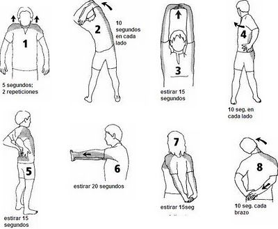

Tipos de ejercicios de espalda
EJERCICIOS para ESPALDA EN CASA üè† Rutina de ESPALDA sin pesas en 10 minutos - YouTube

Sobre Imprensa Direitos autorais Entre em contato Criadores de conteúdo Publicidade Desenvolvedores Termos Privacidade Pol√≠tica e seguran√ßa Como funciona o YouTube Testar os novos recursos © 2021 Google LLC
Posted by Jack  Read more
Read more  Comments (15)
Comments (15)  2021.06.22 15:45
2021.06.22 15:45